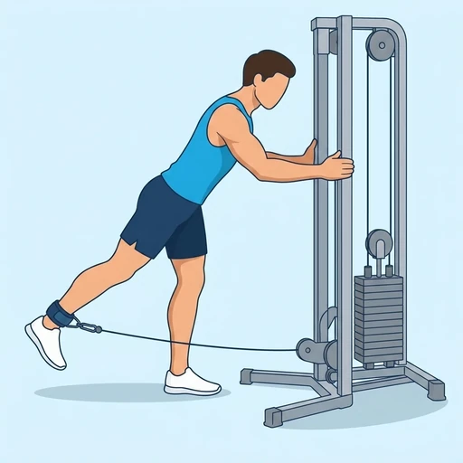

Cable Glute Kickback
A cable isolation exercise for the glutes, extending the hip back against constant resistance.
Upper legs · Cable Machine · Intermediate


Muscles worked by the Cable Glute Kickback
Primary
Secondary
Also called: glute, glutes, gluteus maximus, buttocks, butt.
Equipment
Also called: cable pulley, functional trainer, cable crossover, cable column, cable station, pulley machine.
How to do the Cable Glute Kickback
- Attach an ankle cuff to a low cable pulley and fasten it around one ankle.
- Stand facing the machine, holding the frame lightly for balance, and hinge slightly forward at the hips.
- Kick the cuffed leg straight back, extending the hip fully while keeping the knee nearly straight.
- Squeeze the glute at full hip extension, then return the foot slowly to the start.
- Complete all reps on one side before switching.
Form tips
- Lead with the heel to maximize glute activation over hamstrings.
- Keep the hips square; avoid rotating the pelvis as the leg kicks back.
- The movement comes entirely from the hip — keep the back and torso still.
At a glance
| Body part | Upper legs |
|---|---|
| Category | Strength |
| Force type | Push |
| Mechanic | Isolation |
| Difficulty | Intermediate |
| Equipment | Cable Machine |
| Goals | Hypertrophy |
| Tags | Arm day, Push day |
| MET | 5.0 (metabolic equivalent, for calorie estimates) |
| Unilateral | Yes |
| Bodyweight | No |
| Dataset id | cable-kickback |
Cable Glute Kickback in German & Spanish
| German | Kabelzug-Gesäßkick |
|---|---|
| Spanish | Patada Trasera de Glúteos en Cable |
Descriptions, instructions and tips ship in all three languages in the JSON.
Related exercises
Exercise data (JSON)
The record below is exactly what exercises.json ships for this exercise — names, descriptions, instructions and tips in English, German and Spanish.
{
"id": "cable-kickback",
"name_en": "Cable Glute Kickback",
"name_de": "Kabelzug-Gesäßkick",
"name_es": "Patada Trasera de Glúteos en Cable",
"description_en": "A cable isolation exercise for the glutes, extending the hip back against constant resistance.",
"description_de": "Eine Kabelisolationsübung für den Gesäßmuskel, bei der die Hüfte gegen konstanten Widerstand vollständig gestreckt wird.",
"description_es": "Un ejercicio de aislamiento en cable para el glúteo mayor que extiende la cadera hacia atrás contra resistencia constante.",
"category": "strength",
"force_type": "push",
"mechanic": "isolation",
"difficulty": "intermediate",
"equipment": "cable",
"body_part": "upper_legs",
"primary_muscles": [
"gluteus_maximus"
],
"secondary_muscles": [
"hamstrings"
],
"goals": [
"hypertrophy"
],
"tags": [
"arm_day",
"push_day"
],
"variation_group": "tricep-kickback",
"is_unilateral": true,
"is_bodyweight": false,
"instructions_en": [
"Attach an ankle cuff to a low cable pulley and fasten it around one ankle.",
"Stand facing the machine, holding the frame lightly for balance, and hinge slightly forward at the hips.",
"Kick the cuffed leg straight back, extending the hip fully while keeping the knee nearly straight.",
"Squeeze the glute at full hip extension, then return the foot slowly to the start.",
"Complete all reps on one side before switching."
],
"instructions_de": [
"Befestige eine Fußmanschette an der unteren Kabelrolle und lege sie um einen Knöchel.",
"Stehe mit dem Gesicht zur Maschine, halte dich leicht fest und neige die Hüfte leicht vor.",
"Kicke das befestigte Bein gerade nach hinten und strecke die Hüfte vollständig.",
"Spanne das Gesäß am Ende der Bewegung an, dann führe das Bein kontrolliert zurück.",
"Alle Wiederholungen auf einer Seite beenden, dann wechseln."
],
"instructions_es": [
"Coloca una correa de tobillo en la polea baja y sujétala alrededor de un tobillo.",
"De pie frente a la máquina, agárrate ligeramente al soporte e inclínate un poco desde las caderas.",
"Lleva la pierna con la correa hacia atrás extendiendo la cadera completamente y manteniendo la rodilla casi recta.",
"Aprieta el glúteo en la extensión máxima y regresa el pie lentamente a la posición inicial.",
"Completa todas las repeticiones de un lado antes de cambiar."
],
"tips_en": [
"Lead with the heel to maximize glute activation over hamstrings.",
"Keep the hips square; avoid rotating the pelvis as the leg kicks back.",
"The movement comes entirely from the hip — keep the back and torso still."
],
"tips_de": [
"Führe die Bewegung mit der Ferse, nicht mit den Zehen, um das Gesäß zu aktivieren.",
"Halte die Hüften gerade und vermeide ein Verdrehen des Beckens.",
"Die Bewegung kommt nur aus der Hüfte — Rücken und Standbein bleiben stabil."
],
"tips_es": [
"Conduce el movimiento con el talón para maximizar la activación del glúteo.",
"Mantén las caderas paralelas; evita rotar la pelvis al patear hacia atrás.",
"El movimiento viene solo de la cadera: mantén la espalda y la pierna de apoyo estables."
],
"met": 5.0,
"images": {
"flat": {
"start": "images/flat/cable-kickback-start.webp",
"peak": "images/flat/cable-kickback-peak.webp"
}
}
}Fetch just this exercise
const { exercises } = await fetch(
"https://exercise-dataset.com/exercises.json"
).then(r => r.json());
const ex = exercises.find(e => e.id === "cable-kickback");Free for personal and commercial in-app use with attribution (“Exercise data by RepDB”) — see the license and ready-made attribution snippets. Redistributing the data as a dataset or API is not permitted.